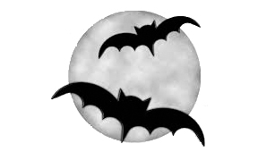
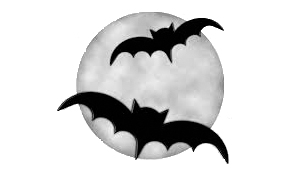

Las galletas del alma también se ofrecían a las propias almas para que se las comieran, o los soulers actuaban como sus representantes. Al igual que en la tradición cuaresmal de los panecillos de Pascua, las galletas del alma solían llevar una cruz, lo que indicaba que se cocían como limosna. Shakespeare menciona el souling en su comedia Los dos hidalgos de Verona (1593). En el momento de souling, los cristianos llevaban «linternas hechas de nabos huecos», que podrían haber representado originalmente las almas de los muertos; las Jack-o'-lantern se utilizaban para ahuyentar a los malos espíritus.
Spooky spin
En el siglo XIX, en Irlanda, Flandes, Baviera y Tirol, el día de Todos los Santos y de los Fieles Difuntos, se encendían velas en los hogares, llamadas «luces del alma», que servían «para guiar a las almas de vuelta a visitar sus hogares terrenales». En muchos de estos lugares también se encendían velas en las tumbas el día de Todos los Santos. En Bretaña, se derramaban libaciones de leche sobre las tumbas de los parientes, o se dejaba comida en la mesa durante la noche para las almas que regresaban; una costumbre que también se encuentra en Tirol y en algunas partes de Italia.

 
